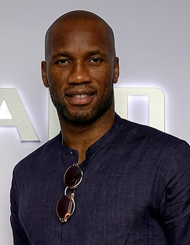

| IMAGE | championnat | coupe national | coupe de ligue | supercoupe | competition(s) continentale(s) | Serie | Total | |
| 496 matchs
209 buts 84 passes decisive |
42 matchs
21 buts 5 passes decisives |
28 matchs
12 but 03 passe decisive |
5 matchs
3 buts 0 passe decisive |
102 matchs
50 buts 14 passes decisives |
7 matchs
2 buts 1 passe decisive |
106 matchs
66 buts 6 passes decisives |
786 matchs
363 buts 113 passes decisives |
DIDIER DROGBA
BIOGRAPHIE
Didier Drogba, né le 11 mars 1978 à Abidjan2, en Côte d’Ivoire, est un footballeur international ivoirien qui évoluait au poste d'avant-centre3.
Drogba commence sa carrière en France, au Mans Union Club 72. Il découvre la Ligue 1 avec l'En avant de Guingamp, puis dispute ses premières rencontres européennes sous les couleurs de l'Olympique de Marseille.
L'attaquant est transféré au Chelsea FC en 2004 où il est un des meilleurs joueurs et attaquants de sa génération. Il remporte notamment l'édition 2011-2012 de la Ligue des champions avec le club anglais. Après son départ, il est élu « meilleur joueur de l'histoire du club » par les supporteurs. Il est à ce jour considéré comme l'un des meilleurs joueurs africains de tous les temps4.
Didier Drogba a fait partie de l'équipe de Côte d'Ivoire de 2002 à 2014. Nommé capitaine de la sélection, dont il est le meilleur buteur, il a été deux fois finaliste de la Coupe d'Afrique des nations en 2006 et 2012.
Il annonce prendre sa retraite sportive le 22 novembre 2018, après 20 ans de carrière dans le monde du football5 professionnel, plus de 700 matchs joués et plus de 360 buts marqués en club et avec la sélection ivoirienne.
Le 11 décembre 2018, il devient officiellement vice-président de l'organisation internationale Peace and Sport6. Le 1er mai 2020, il est nommé vice-président de la commission des acteurs de football au sein de la FIFA7. Le 18 octobre 2021, il est nommé Ambassadeur de l’OMS pour le sport et la santé8.
Biographie
familiales
Alors au Vannes FC au retour de sa famille, Didier redouble à l'école et est privé de football pendant un an13. Il est envoyé à Poitiers, chez un cousin étudiant en droit13,14. Il retrouve ses parents en 1993, lorsque la famille s'installe dans un appartement du quartier des Baconnets à Antony13,12. Il renoue alors avec l'entraînement après avoir pris une licence au Levallois Sporting Club13. Srebrenko Repčić, ancien pro de l'En avant Guingamp devenu l'entraîneur adjoint de Levallois, reconnaît son talent et l'encourage à persévérer12,15. En deux saisons, Drogba inscrit 30 buts avec l'équipe des moins de 17 ans13,16. Lors de la saison 1996-1997, il s'entraîne13 et effectue quelques apparitions dans le National 2 (D4) avec l'équipe senior, mais subit plusieurs blessures qui entravent sa progression12,16 en plus des difficultés de l'entraîneur à lui faire confiance13.
Le jeune attaquant souhaite intégrer un centre de formation et effectue pour cela des essais infructueux à Rennes et Guingamp. Il est contacté par le PSG, qu'il ne souhaite pas rejoindre, puis par un club de division 2, Le Mans Union Club 72.
en club
professionnels au Mans (1997-2002)
Drogba rejoint le MUC 72. Alain Pascalou, adjoint de l'entraîneur Marc Westerloppe, cherche à engager des jeunes de la région Île-de-France. Déjà responsable du recrutement de Dagui Bakari, il permet à Drogba d'intégrer pour la première fois un club professionnel12. Lors de son passage au Mans, Drogba étudie la comptabilité.[réf. nécessaire] Ses deux premières années, comme stagiaire, virent au cauchemar : il se fracture deux métatarses, un péroné et une cheville. Pour Westerloppe, cela est dû à un déficit de musculation : « il n'était pas gainé, il était flasque (...). Il a eu de la chance d'être au Mans. Dans un autre club, on se serait montré moins patient »13.
À l'été 1999, à 21 ans, Didier Drogba signe son premier contrat professionnel13,17. Il évolue en tant que remplaçant de l'attaquant Daniel Cousin et entre en jeu le plus souvent en fin de match18. Il est observé en 2001 par Bertrand Marchand, responsable de l'équipe réserve du Stade rennais18. Lors de la saison 2001-2002, Werterloppe est écarté. Son successeur Thierry Goudet l'utilise sur un côté, à contre-emploi. Il quitte le club pour Guingamp en janvier 2002. En l'espace de quatre saisons, le bilan de Drogba dans le club manceau est de 12 buts en 64 matchs de championnat17.
à Guingamp (2002-2003)
En janvier 2002, l'En avant Guingamp, relégable en première division, cherche un attaquant pour compenser le départ de Fabrice Fiorèse et la blessure de Stéphane Guivarc'h11. Guy Lacombe engage Drogba contre l'avis de tous13 pour la somme de 100 000 euros18. Titulaire pour son premier match à Metz, l'Ivoirien marque pour le premier succès à l'extérieur de la saison (2-4)13. Il aide l'EAG à se maintenir dans l'élite en marquant trois buts en 11 rencontres durant sa première saison. Sous la houlette de Bertrand Marchand, qui succède à Lacombe au poste d'entraîneur, il se révèle au grand public durant la saison 2002-2003. L'attaquant se blesse au mois d'octobre, ce qui donne l'occasion à son entraîneur de lui faire travailler son point faible, le physique. Durant un mois et demi, il améliore son endurance en suivant des séances d'entraînement fractionné sur l'île de Bréhat. Drogba revient en grande forme pour disputer les quatre derniers mois de la saison et porte son total à 17 buts en championnat18. Associé à Florent Malouda, entouré de joueurs tels Claude Michel, Stéphane Carnot et Christophe Le Roux, il permet au club breton de terminer 7e, à trois points d'une qualification pour la Ligue des champions. Drogba s'épanouit véritablement dans ce club familial, il y laisse son empreinte et y conserve des attaches. En 2012, à l'occasion du centenaire de l'EAG, il revient dans les Côtes-d'Armor et est ovationné par le public du stade du Roudourou avec d'autres anciens du club5. Il est élu aux côtés de Stéphane Guivarc'h dans « l'équipe du siècle » de l'EAG, désignée par les 16 000 internautes ayant participé à un vote organisé par le quotidien régional Ouest-France19.
d'une idole à l'OM (2003-2004)
Alain Perrin fait venir Drogba au club en 2003 avant d'être remplacé par José Anigo au poste d'entraîneur de l'OM. L'attaquant ivoirien joue son premier match sous ses nouvelles couleurs le 2 août 2003, lors de la première journée de la saison 2003-2004 face à son ancienne équipe, l'EA Guingamp. Titulaire, il se fait remarquer en délivrant une passe décisive pour Ibrahima Bakayoko sur le seul but de la rencontre, permettant à son équipe de s'imposer20. Il réalise son premier doublé pour l'OM le 27 septembre 2003, lors d'une rencontre de championnat face à l'OGC Nice. Titulaire ce jour-là, il donne la victoire à son équipe alors que celle-ci est menée au score (2-1 score final)21. Le 1er octobre 2003 il se fait remarquer lors de la phase de groupe de Ligue des champions face au FK Partizan Belgrade en signant un triplé, donnant ainsi la victoire à son équipe (3-0 score final)22.
L'attaquant passe une saison pendant laquelle il se révèle comme l'un des plus grands attaquants européens du moment. Il inscrit 19 buts en championnat, dont une reprise de volée qui se loge dans la lucarne face à Montpellier, élue « plus beau but de l'année » lors de la cérémonie des trophées UNFP, et onze buts en Ligue des champions puis en Coupe de l'UEFA. Le club atteint la finale de cette dernière, disputée en mai 2004, et perdue face au Valence CF. À propos de sa saison à l'Olympique de Marseille, Vincent Labrune, devenu ensuite président du club, déclare :
« Dans l'histoire du football, j'ai rarement vu un joueur porter son équipe sur ses épaules autant que Didier Drogba. Tout était construit autour de lui. Ah si ! avant lui, il n'y a eu que Maradona à Naples dans les années 1980… »18. Lors du match de Ligue des champions opposant Marseille au FC Porto, l'entraîneur portugais José Mourinho est séduit par le joueur. À la fin du match, il le rencontre et lui explique que lorsqu'il aura la possibilité de le faire venir dans son équipe, il le fera. C'est effectivement ce qu'il fait l'année suivante alors qu'il est devenu l’entraîneur du Chelsea FC. Il quitte donc la Canebière après 32 buts en 55 matchs pour le club phocéen. Il fera son retour au Stade Vélodrome sous le maillot londonien le 8 décembre 2010 , lors d'un match de poule de Ligue des Champions (victoire 1-0 de l'OM)
En 2022, le magazine So Foot le classe dans le top 1000 des meilleurs joueurs du championnat de France, à la 99e place23.
à Chelsea (2004-2012)
En juillet 2004, Drogba rejoint le Chelsea Football Club, propriété du milliardaire russe Roman Abramovitch. Le joueur est transféré malgré ses réticences personnelles et surtout celles du public marseillais, qui ne veut pas le laisser partir, à la différence du président de l'OM de l'époque, Christophe Bouchet. L'opération est évaluée à 37,5 millions d'euros24. Une indemnité est redistribuée aux clubs ayant contribué à sa formation. Le Tourcoing FC et le Vannes OC, qu'il a fréquenté durant son enfance, touchent chacun une indemnité de 93 750 euros. Le club omnisports Levallois Sporting Club et Le Mans Football Club reçoivent chacun la somme de 675 000 euros.
Ayant fait de lui une de ses priorités lors du mercato estival, José Mourinho installe Didier Drogba dans son équipe type dès le début de la saison 2004-2005. L'Ivoirien joue son premier match le 15 août 2004, en championnat, face à Manchester United, à Stamford Bridge. Drogba délivre une passe décisive à Eidur Guðjohnsen sur le seul but de la partie, qui permet donc aux blues de s'imposer25. L'attaquant fait partie des six joueurs retenus systématiquement par le coach lors des dix premières rencontres disputées par le club. Il est leur meilleur buteur, avec 5 buts en 10 matchs, et le seul joueur de Chelsea, avec Joe Cole, à avoir marqué plus d'une fois. Mais au début du mois d'octobre il subit une blessure à l'aine qui nécessite une opération26. Drogba effectue son retour à la fin du mois de novembre27. En fin de saison, l'ivoirien présente un bilan mitigé de 16 buts en 41 matches disputés. Chelsea est néanmoins sacré champion d'Angleterre pour la première fois depuis 50 ans. Les « blues » remportent également la Coupe de la Ligue (alors baptisée Carling Cup) face au Liverpool FC. En finale, Drogba donne l'avantage à Chelsea durant les prolongations et le club s'impose 3-2 après l'égalisation de Liverpool et un dernier but de Mateja Kežman.

Les Londoniens démarrent la saison 2005-2006 en remportant le Community Shield, trophée opposant le champion en titre au vainqueur de la Coupe d'Angleterre. Didier Drogba inscrit à cette occasion un doublé face à Arsenal FC. Mais l'attaquant éprouve des difficultés à s'imposer en championnat. Il traverse une longue période de disette, n'inscrivant que deux buts en Premier League entre novembre et le début du mois de mars28. Lorsqu'il réalise un doublé face à Manchester City FC le 25 mars, sa performance est entachée par des controverses29. Après le match, le joueur admet s'être aidé de la main avant d'inscrire le second but, une faute que n'ont pas décelé l'arbitre et ses assistants. Drogba est critiqué par la presse britannique, qui lui reproche également de « plonger » pour tromper les arbitres et faire sanctionner les défenseurs adverses30. Son entraîneur lui apporte néanmoins son soutien, le décrivant comme un élément important de l'équipe et comme une personne de confiance sur laquelle il sait pouvoir s'appuyer29. En fin de saison, le Chelsea Football Club remporte le titre de champion d'Angleterre pour la deuxième année consécutive. Avec 16 réalisations en 41 rencontres, Drogba présente le même bilan que l'année précédente28. Après avoir essuyé de nombreuses critiques, y compris de la part des supporters de Chelsea, le joueur songe à quitter le club durant l'intersaison17.
En mai 2006, Chelsea recrute l'attaquant ukrainien Andriy Chevtchenko, en provenance de l'AC Milan. Il est associé à Didier Drogba dans un nouveau système de jeu à deux attaquants axiaux adopté par José Mourinho. Celui-ci convient davantage à l'Ivoirien, qui exploite mieux son potentiel17,31. Il inscrit un doublé permettant à Chelsea de s'imposer face à Arsenal FC en finale de la Coupe de la Ligue et se montre également décisif face à Manchester United en finale de la Coupe d'Angleterre, elle aussi remportée par le CFC. L'ivoirien inscrit l'unique but de la rencontre durant les prolongations. Il marque à 33 reprises avec son club durant la saison et ses 20 réalisations en Premier League lui permettent de finir meilleur buteur de la compétition28. Drogba s'impose également au niveau international. Après avoir atteint la finale de l'édition 2006 de la Coupe d'Afrique des nations avec l'équipe de Côte d'Ivoire, qui en outre réussit à se qualifier pour la Coupe du monde 2006, l'attaquant obtient le prix Sport Ivoire attribué au meilleur joueur ivoirien de l'année32. En février 2007, il inscrit pour la première fois son nom au palmarès du joueur africain de l'année en devançant le Camerounais Samuel Eto'o, récompensé lors des trois éditions précédentes.
Au cours de la saison 2007-2008, Drogba réussit un doublé en demi-finale de la Ligue des champions face à Liverpool FC, ce qui qualifie Chelsea pour la finale qui l'oppose à Manchester United. Chelsea perd la finale lors des tirs au but alors que Drogba avait été expulsé durant la prolongation pour une gifle sur Vidic. Le mercredi 6 mai 2009, alors que le match de demi-finale retour de la Ligue des champions voit le FC Barcelone vainqueur (1-1) grâce à un but d'Iniesta à la 93e minute, Didier Drogba prend à partie l'arbitre norvégien Tom Henning Øvrebø à la suite de ce qu'il considère comme des penalties non sifflés, en hurlant devant les caméras de télévisions à la fin du match : « It's a disgrace… It's a fucking disgrace! » (« C'est une honte… C'est une putain de honte »). Ce comportement lui coûtera une suspension de quatre matchs durant la prochaine édition de la Ligue des champions.
Drogba remporte la Ligue des champions avec Chelsea en 2012.
Malgré cela, la reprise de la saison 2009-2010 se fait sur d'excellentes bases. Il marque notamment un doublé lors de sa réapparition sous le maillot de Chelsea en Ligue des champions face à l'Atlético de Madrid comptant pour la phase de groupe, assurant la qualification de l'équipe dans la compétition. En mars 2010, Didier Drogba est nommé Joueur africain de l'année 2009, devant Samuel Eto'o et Michael Essien34. Il reprend le championnat, toujours sur les couleurs de Chelsea FC malgré les rumeurs l'annonçant sur le départ. En inscrivant son premier coup du chapeau de la saison face à West Bromwich Albion, il contribue à une large victoire 6-0 qui classe Chelsea en tête de la Premier League dès la première journée. En septembre, il inscrit son 13e but en 13 matchs contre Arsenal Football Club, un record qui lui vaut d'être surnommé « le bourreau des Gunners ».
En mars 2012, lors d'une rencontre face à Stoke City, Drogba devient le premier footballeur africain à atteindre la barre des cent buts en Premier League35. Au mois d'avril, l'Ivoirien inscrit le seul but de la rencontre face au FC Barcelone durant la demi-finale aller de la Ligue des champions 2011-2012 disputée à Stamford Bridge36. Lors de la finale contre le Bayern Munich, l'attaquant égalise à la 88e minute (1-1). Après les prolongations, lors de la séance des tirs au but, il est le 5e tireur et donne la victoire à son équipe (4-3 aux tirs au but) en prenant à contrepied Neuer, après avoir songé à tenter une "panenka". Il répare ainsi sa faute effectuée à la 95e minute de jeu sur Franck Ribéry, qui a donné lieu à un pénalty en faveur des Bavarois, tiré par Arjen Robben et arrêté par Petr Čech37. En juin, Didier Drogba est en fin de contrat. Il s'engage pour deux ans et demi avec le Shanghai Shenhua, qui évolue dans la Super League chinoise38. Il quitte Londres après 8 saisons, durant lesquelles il a inscrit 157 buts en 341 matches toutes compétitions confondues39. En novembre, l'Ivoirien est élu « meilleur joueur de l'histoire de Chelsea » à l'occasion d'un sondage organisé par le magazine officiel du club.
EXPERIENCE A SHANGAI Shenhua (2002-2004)
L'ex-blues rejoint donc la Chine avec un salaire mirobolant le propulsant au 6e rang des joueurs les mieux payés au monde42. Drogba marque ses deux premiers buts pour son nouveau club en août 2012 face à Hangzhou Greentown, lors d'un match remporté par son équipe 5-1. Un conflit éclate entre le conseil d'administration du club et son président Zhu Jun ; ce dernier menace de suspendre le paiement des salaires des joueurs étrangers43. Didier Drogba quitte le club prématurément après avoir inscrit 8 buts en 11 matches44. En janvier 2013, il signe pour 18 mois avec le club de Galatasaray45. L'attaquant, qui espère prendre part à la Coupe du monde de football de 2014, rejoint le club pour mieux s'y préparer44. Selon la presse, son salaire global sur la durée du contrat s'élève à 10 millions d'euros, avec une prime de 15 000 € par match disputé.
Shanghai Shenhua, qui ne reçoit aucune compensation financière dans l'opération, s'oppose au départ de Drogba. Galatasaray estime que le non-paiement des trois derniers mois de salaire par le club chinois invalide le contrat de l'attaquant, qui courait jusqu'en 2014. La FIFA autorise la Fédération de Turquie à délivrer au joueur une licence temporaire47. Pour son premier match, disputé le 15 février 2013, l'Ivoirien entre en cours de jeu face à Akhisar Belediyespor et ouvre le score de la tête48. Le mois suivant, après avoir été victime d'une faute controversée dans la surface de réparation adverse, il manque un penalty face à Gençlerbirliği. À l'issue du match, le club d'Ankara s'impose 0-1 à la Türk Telekom Arena.
Le 6 avril 2013, Drogba inscrit son premier doublé en Turquie face à Mersin Idmanyurdu, match remporté par son équipe 3-1 lors de la 28e journée de la Super Lig50. Il marque également contre le Real Madrid en quarts de finale retour de la Ligue des champions, le score final est de 3-2 pour le Galatasaray51. Le 5 mai 2013, Didier Drogba est champion de Turquie avec le Galatasaray SK.
L'année suivante, il gagne l'Emirates Cup 2013, où il met un doublé face à Arsenal. Le 11 août, il permet à son équipe de gagner contre son grand rival Fenerbahçe en Super coupe de Turquie, en marquant à la 99e minute53. Après la défaite du Real Madrid (1-6) et au départ de son entraîneur Fatih Terim (qui sera remplacé par Roberto Mancini), il s'illustre lors du match nul contre la Juventus (en Italie) en marquant et en délivrant une passe décisive à Umut Bulut à la 88e minute54. Son équipe parvient à se qualifier pour les 1/8 de finale lors de son match en Turquie contre la Juventus (1-0)55, avant de se faire éliminer par son ancienne équipe, Chelsea (1-1 en Turquie, 2-0 en Angleterre)56. Arrivé en fin de contrat, il quitte le club turc en mai 201457.
Retour à Chelsea avant Montréal (2014-2016)
25 juillet 2014, il signe un contrat d'un an avec Chelsea. Il marque le 22 octobre 2014 son premier but pour son retour avec les Blues face à Maribor sur pénalty en Ligue des champions (victoire 6-0). Il marque le 26 octobre 2014 son premier but en Premier League pour son retour avec Chelsea face à Manchester United (nul 1-1).
Alors que diverses équipes sollicitent ses services, il décide de s'engager pour dix-huit mois auprès de l'Impact de Montréal le 27 juillet 201559 après que la franchise québécoise a obtenu un accord pour devancer le Fire de Chicago dans le processus d'attribution60. Il fait sa première apparition sur le sol nord-américain le 23 août en remplaçant Dilly Duka à la 59e minute de jeu mais ne peut empêcher une défaite 1 à 0 à domicile face à l'Union de Philadelphie. Pour sa première titularisation, le 6 septembre, il inscrit un triplé au Chicago Fire pour une victoire 4 à 3 à Montréal. Deux semaines plus tard, toujours à domicile, il trouve de nouveau le chemin des filets et délivre sa première passe décisive, pour Duka, contre la Nouvelle-Angleterre pour une large victoire 3 à 0. Il ouvre le score quatre jours plus tard face au Chicago Fire (victoire 2-1). D'un doublé, il offre une victoire 2 à 0 face au D.C. United le 26 septembre puis inscrit le but de la victoire en déplacement aux Rapids du Colorado le 11 octobre. Trois jours plus tôt, il réduit le score et convertit son premier penalty à New York, contre les Red Bulls, cette défaite 2 à 1 est la seule de Montréal avec Didier Drogba titulaire en saison régulière. Il conclut cette saison régulière par un nouveau doublé inscrit en deux minutes contre l'autre franchise canadienne, le Toronto FC, pour une victoire 2 à 1, portant son total à 11 buts en 11 rencontres.
Il débute la phase finale en signant le troisième but d'une victoire 3 à 0, de nouveau contre le Toronto FC. Ses performances ne passent pas inaperçues en Europe, un retour est alors évoqué après la fin du championnat, notamment du côté de Bologne, dont le copropriétaire, Joey Saputo, est également celui de l'Impact61. Muet lors de la double confrontation contre Columbus dans le cadre de la demi-finale de la conférence Est, son équipe connaît l'élimination par un score cumulé de 4-3, mettant ainsi fin à la campagne 2015 de la franchise montréalaise.
Fin de carrière à Phoenix (2017-2018)
En fin de contrat au 1er janvier 2017, Didier Drogba demeure sans équipe, toujours à la recherche d'une dernière opportunité, jusqu'à sa signature au Rising FC de Phoenix, équipe de USL, la seconde division nord-américaine, le 12 avril 2017. Hors des terrains, il annonce rejoindre le groupe d'investisseurs qui travaillent à amener une franchise de Major League Soccer à Phoenix.
Drogba met un terme à sa carrière le 9 novembre 2018 sur une défaite 1-0 sous le maillot de Phoenix face à Louisville en finale de la USL, inscrivant sept buts en treize rencontres pour sa dernière saison.
Carrière internationale (2002-2014)
L'aventure en équipe de Côte d'Ivoire débute en juillet 2002 pour Didier Drogba. Il joue alors en première division française avec Guingamp depuis six mois et est convoqué par Robert Nouzaret à un stage de trois jours à Créteil. Il fait ensuite ses débuts en équipe nationale le 8 septembre contre l'équipe d'Afrique du Sud (0-0). La convocation pour ce match l'oblige à choisir pour quel pays il veut jouer. En 2004, il déclare : « à un moment donné, si l'équipe de France m'avait sollicité, j'aurais dis oui (...). Mais il y a toujours eu ce côté ivoirien chez moi. Je me voyais plus porter le maillot de la sélection ivoirienne »13. Il inscrit son premier but le 11 février 2003 lors d'un match amical face au Cameroun où il est titularisé (victoire 0-3 des Ivoiriens).
Lors de l'hiver 2006, il emmène la Côte d'Ivoire en finale de la coupe d'Afrique des nations, perdue face à l'Égypte.
Capitaine de la sélection, il conduit en juin la Côte d'Ivoire au Mondial 2006, où l'équipe est éliminée dans un groupe difficile (Pays-Bas, Argentine et Serbie-Monténégro). La Côte d'Ivoire avait bénéficié d'un concours de circonstances favorables pour se qualifier à ce mondial. Un pénalty raté du Cameroun à la 90e minute de jeu face à l'Égypte coûta aux Lions Indomptables la qualification pour le mondial allemand.
Le 10 juin 2006, lors de la Coupe du monde 2006 en Allemagne, Drogba marque son premier but pour les Éléphants ivoiriens pour leur première phase finale d'un mondial et réduit l'écart malgré la défaite face à l'Argentine (1-2).
Lors de la CAN 2008, l'équipe de Côte d'Ivoire réussit à se qualifier pour les demi-finales face à l'Égypte. Malheureusement, tout ne se passera pas comme prévu puisque l'Égypte domine la Côte d'Ivoire (4-1) et met fin au rêve de Drogba de remporter la CAN 2008. Lors de la petite finale, La Côte d'Ivoire sombre une deuxième fois face au Ghana (2-4) et encaisse ainsi 8 buts en 2 matchs.
Lors du match opposant le Malawi à la Côte d'Ivoire qui a lieu le 10 octobre 2009, alors que la Côte d'Ivoire est menée depuis la 63e minute, Didier Drogba fait son entrée sur le terrain. Trois minutes après, il égalise en faveur de la Côte d'Ivoire. Et le score reste tel jusqu'à la fin du match. Ce nul (1-1) obtenu par la Côte d'Ivoire lui permet d'obtenir son ticket en vue du Mondial 2010 en Afrique du Sud. Lors du match opposant la Côte d'Ivoire à la Guinée, Drogba est forfait du fait d'une blessure, ce qui n'empêche tout de même pas la Côte d'Ivoire de remporter la victoire avec un score de (3-0).
Lors de la CAN 2010, Drogba et ses coéquipiers se font éliminer (3-2) par la sélection algérienne en quart de finale.
Le 4 juin 2010, Didier Drogba envisage de déclarer forfait pour la Coupe du monde en Afrique du Sud, qui débute le 11 juin, en raison d'une blessure au bras droit contractée la veille lors d'un match de préparation contre le Japon, à la suite d'un choc avec le défenseur Marcus Tulio Tanaka. Finalement, il se fait opérer et est sur pied pour le premier match de la sélection ivoirienne contre le Portugal (0-0). Au cours de cette compétition, il devient le premier joueur africain à marquer un but à l'équipe du Brésil (1-3) en phase finale d'une coupe du monde.
Après un long moment d'absence en équipe de Côte d'Ivoire, Drogba revient en éliminatoires de la CAN 2012 marquant face au Bénin un doublé qui rapproche la Côte d'Ivoire de la qualification.
Le 12 février 2012, lors de la finale de Coupe d'Afrique des Nations qui se déroule à Libreville au Gabon, Didier Drogba rate un pénalty. La Zambie remporte le trophée après une séance de tirs au but. La Côte d'Ivoire perd le tournoi alors qu'elle n'a pas encaissé de buts durant toute la compétition.
Le capitaine de l’équipe nationale de Côte d’Ivoire, les Éléphants, Didier Drogba, annonce à Abidjan qu’il arrêtera sa carrière internationale avec les « Éléphants » après les phases finales de la Can 2013 et du Mondial 2014.
Didier Drogba prend part à la Coupe d'Afrique des nations 2013, organisée en Afrique du Sud en janvier et février, alors qu'il n'a pas joué en compétition depuis le mois de novembre de l'année précédente. Sa prestation lors de la première rencontre de la phase de groupes est jugée décevante65. Il commence le match face à la Tunisie sur le banc des remplaçants et marque son seul but de la compétition contre l'Algérie (2-2). L'équipe de Côte d'Ivoire échoue en quarts de finale devant le Nigeria (1-2)66. Le sélectionneur Sabri Lamouchi se réjouit du transfert de son attaquant à Galatasaray, annoncé durant la CAN 201344. Mais il estime que Drogba « n’est pas au mieux de sa forme » et ne le convoque pas pour affronter la Gambie en mars 2013 dans le cadre des éliminatoires de la Coupe du monde 2014.
Le 16 novembre 2013, Drogba fête son 100e match en sélection nationale lors d'un match crucial des Éliminatoires de la Coupe du monde 2014 à Casablanca au Maroc face au Sénégal en faisant match nul (1-1) lors des barrages retour (3-1 à l'aller) et se qualifie pour la Coupe du monde 2014 au Brésil. Didier Drogba n'a donc jamais remporté de Coupe d'Afrique des Nations dans sa carrière 69.
Lors de la Coupe du monde 2014, il entre en jeu contre le Japon alors que son équipe est menée sur le score de 0-1. 5 minutes après son entrée en jeu, la Côte d'Ivoire égalise puis prend l'avantage de ce match après une victoire (2-1). Didier Drogba aura réellement influé sur le jeu ivoirien.
Le 8 août 2014, il annonce à trente-six ans sa retraite internationale. Il aura joué 106 matchs et marqué 66 buts avec les Éléphants70.
Après-carrière
candidat à la fédération de football ivoirienne
Le 22 avril 2022, Didier Drogba s'incline au premier tour des élections présidentielles de la fédération de football ivoirienne. Avec 21 voix récoltées sur 130, il termine derrière Idriss Diallo (vainqueur au second tour avec 63 voix) et Sory Diabaté (61 voix obtenues au second tour).
Quelques jours après l'élection, Idriss Diallo indique souhaiter travailler avec ses adversaires, dont Didier Drogba, qu'il aimerait impliquer au cours de son mandat.
consultant pour Canal +
À partir de la saison 2021-2022, Didier Drogba rejoint l'équipe de consultants de Canal + pour intervenir sur les matchs de Ligue des champions.
Présentation des Ballon d'or 2022
Le 17 octobre 2022 il co-présente avec Sandy Heribert la 66e cérémonie de remise du trophée du Ballon d'or 2022 au théâtre du Chatelet à Paris.
Style de jeu
Didier Drogba est doté d'une très bonne frappe, lui permettant de marquer en dehors des seize mètres, il est doté d'une très grande puissance ainsi qu'une force considérable, ce qui lui confère une grande capacité à jouer dos au but. Il est aussi doté d'un jeu de tête au-dessus de la moyenne. Attaquant complet et physique, il est très bon balle au pied malgré sa grande taille et sa technique lui permet de se sortir de situations difficiles. Son caractère impulsif et son manque de sang-froid face à des provocations ou à des décisions arbitrales l'amènent assez souvent à être sanctionné. Il fut également assez critiqué pour sa propension à simuler sur les contacts ou à plonger dans la surface.
STATISTIQUES de Didier Drogba au 21 octobre 2018
source